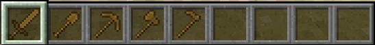
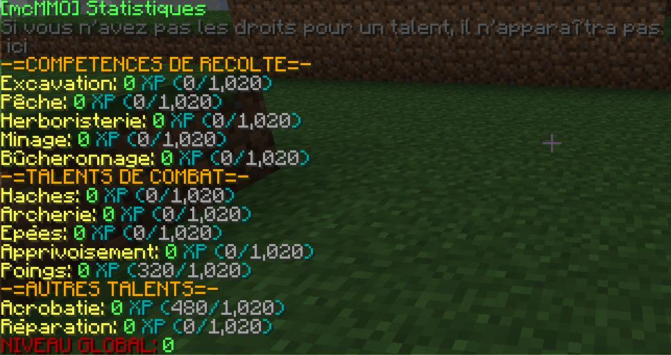
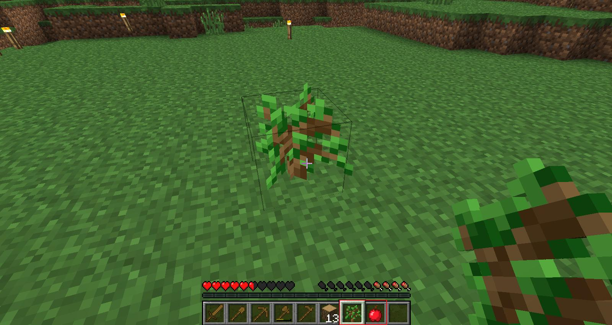
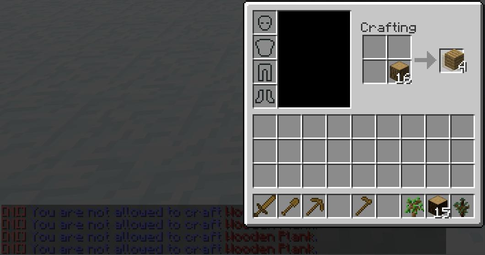
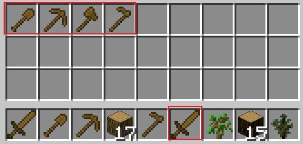
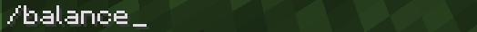
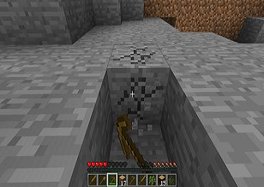
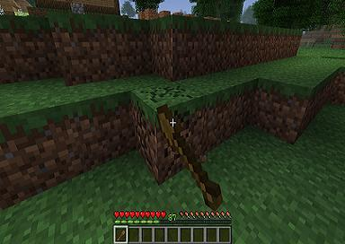
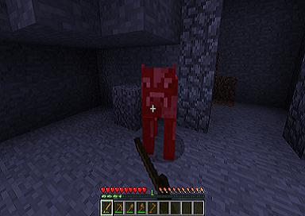
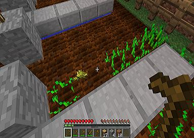

1/Introduction aux compétences et aux talents.
Tout d’abord avant de commencer sachez qu’il va y avoir dans ce tutoriel une grande différence entre les talents et les compétences..
Je vais vous présenter quelque commande à savoir pour vous sentir mieux sur le serveur (vous pourrez annoncez vos prière envers moi à la fin de ce tutoriel, je sais que vous en mourez d’envie), mais aussi je tiens à vous dire que malgré que je sois une personne qui aime le travail acharnée je ne présenterai qu’une compétence : le bucheronnage.
Commençons, donc lorsque vous commencez sur le serveur vous avez du remarquer que vous commenciez avec ceci.
Bien donc sachez que c’est items vont nous servir dès le début mais avant notez bien cette commande que vous utiliserai tout au long du jeu.

"/mcstats" cette commande va vous permettre d’afficher ceci :
Elle affiche toutes les compétences et talents disponible et affiche leurs expériences. Plus tard une fois avoir coupé suffisamment de bois vous verrez se genre de message.
Enfin vous passez votre premier lvl mais ne vous emballer pas malgré que les premiers niveaux soit facile à atteindre il y a tout de même 1000lvl par compétence et par talent.
Remarque : en particulier pour ce métier il est conseiller de replanter les arbres, ça ne prend que une seconde et cela permet d’avoir toujours des arbres à couper pas trop éloigner du Spawn, et permet aux nouveaux comme vous de pouvoir profiter assez rapidement du jeu.
Je conseille de commencer par se métier car c’est le vraiment le premier à monter il vous permet de faire deux choses en même temps non négligeable. Comme dans le cadre du dessus vous pourrez récupérer des pommes et en second atteindre le lvl pour vous Craft des items (comme tout simplement la table de Craft).
Mais ? Que se passe-t-il encore ? Ce serveur est nul…
Stop ! On attend, effectivement vous ne pourrez Craft des planches qu’à partir d’un certain lvl (voir mémento Compétence). Donc comment faire pour continuer à couper du bois les items ne sont pas éternel. Justement je vous propose ceci :
Cette commande va vous permettre de récupérer un kit complet d’item en bois comme ceci :
En revanche vous devez savoir que tout se paye en ce bas monde et malheureusement pour vous :
D’après cette photo vous pouvez en déduire que vous possédez déjà une certaine somme sur votre compte pour en connaitre la somme :
Et voilà vous pourrez maintenant savoir comment faire si vous êtes a cour d’item et consulter votre somme. Naturellement les étapes montrer pour la compétence bucheronnage marche pour toutes les autres naturellement.
   Mais naturellement je n’ai pas montré tout en photo cela aurai pris trop de place et top d’explication. Mais par exemple pour le talent "poings" il suffit de taper des mobs voir joueur (si les deux sont consentant) et de l’expérience viendra à chaque coup donner, et pour l’acrobatie il faut faire des sauts qui produise des dégâts et de l’expérience est donner celons les dégâts reçu.
Remarque : mais pour toutes les informations concernant chaque métier je vous conseille de lire ce qui suit.